サバイバールール
キャラクター、パーク、アイテムなどの使用条件。
参加区分による違いを確認してください
個人・ペア参加とチーム参加で、パーク重複制限・キラー再使用制限が異なります。4人応募に運営がキラーを編成したチームは「チーム参加」です。
サバイバー制限
- 同一試合のサバイバー4名間でキャラクターの重複禁止。レジェンダリーはゲーム上の別キャラクターとして扱うが、同一レジェンダリー同士は重複不可。
- チーム参加：同一試合のサバイバー4名間で同一パークの重複は禁止。
- 個人・ペア参加：原則として同一パークの重複は禁止。ただし、全力疾走・セルフケア・植物学の知識は、同一パークを最大2名まで採用可能。3名以上による同一パークの採用は禁止。
重複できるパーク
個人・ペア参加に限り、全力疾走・セルフケア・植物学の知識は、それぞれ同一パークを最大2名まで採用できます。
全力疾走以外の疲労パークは重複の例外に含みません。禁止パークの使用も認められません。
オファリング
両陣営とも、すべてのオファリングを使用禁止とします。
禁止パーク
恵みパークはすべて禁止。
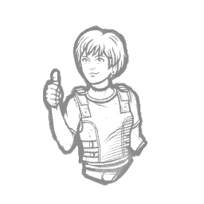
安心感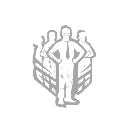
有能の証明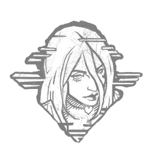
邪気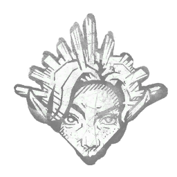
不動の視力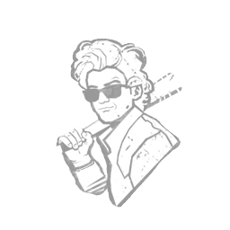
ベビーシッター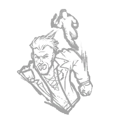
加速の策略重責の引き受け
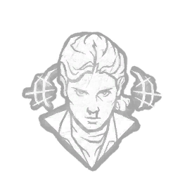
ESP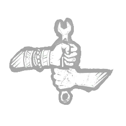
切磋琢磨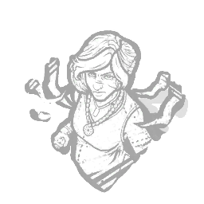
過剰な熱意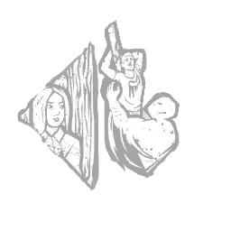
自己防衛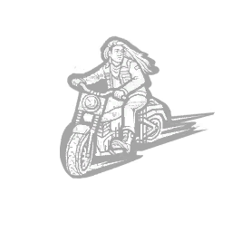
アクセル全開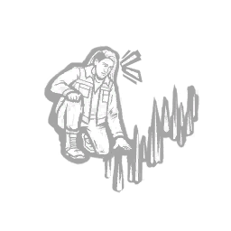
反対尋問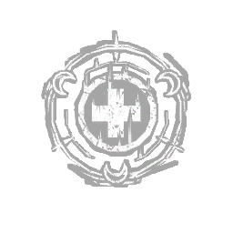
恵み：癒しの輪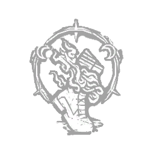
恵み：シャドウステップ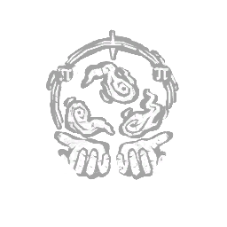
恵み：指数関数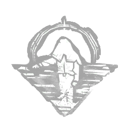
恵み：霊界理論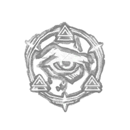
恵み：イルミネーション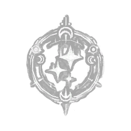
恵み：着実アイテム
- アイテムの持ち込みは禁止。持ち込みアイテムのアドオンも使用禁止。
- 試合中に入手・生成したアイテムは使用可能。ただし鍵は使用禁止。拾うこと自体は可。
- 鍵を使用した場合、鍵によって得た結果は原則無効。試合結果・進行への影響が大きい場合は運営が再試合・追加処置等を判断する。
トーテム（重要ルール）
禁止されているのは、発電機1台目の修理完了前に呪いのトーテムを破壊完了することです。
通常ルール
発電機 修理完了0台呪いのトーテム：破壊完了不可
触ること・浄化を開始することは可能です。
発電機1台目 修理完了
条件達成後呪いのトーテム：破壊可能
1回目の早期破壊
発電機1台目の修理完了前に、呪いのトーテムを破壊完了した場合は直ちに再試合とします。
直ちに再試合
次の条件Aまたは条件Bの、どちらか一方を満たすまで破壊完了不可。
条件A発電機を2台修理完了
または（OR）AとBの両方を達成する必要はありません
条件B発電機を1台修理完了＋キラー側が5吊りに到達
AまたはBのどちらかを満たす
呪いのトーテム：破壊可能
再試合でも違反した場合
解除条件を満たす前に、再び呪いのトーテムを破壊完了した場合の処理です。
直ちに再試合
その次の再試合
サバイバー側は、試合中を通して呪いのトーテムを破壊できない
セノバイトの箱＋予想外の展開
- セノバイトの箱を所持した状態で「予想外の展開」を使用することは禁止。
- 違反時はキラー側の意向を確認したうえで、再試合・続行等を運営が判断する。
AFC
- AFCによる自力脱出は原則禁止。AFCゲージが溜まること自体は違反としない。
- 正規の自力脱出パークを使用する場面で、ゲーム仕様上AFCの自力脱出が優先された場合は使用可能。
- 未通電ハッチ閉鎖後の地下室での試合終了処理では、AFCによる自力脱出を行わない。
煽り・エモート等
- 攻撃・当たり判定回避を目的としたしゃがみは使用可能。挑発目的の屈伸は禁止。
- ライトカチカチ、挑発目的のエモート、その他意図的な煽り行為は禁止。
- 板前・ゲート内でのエモートテックは原則使用禁止。ただし、その行為単体では大会上のペナルティを科さない。キラー側から申告があった場合、運営から注意することがある。